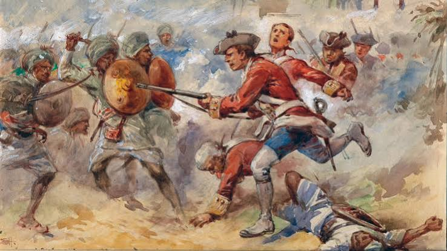
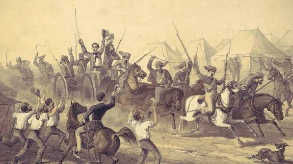

India's Freedom Struggle
From the first spark of rebellion to the dawn of independence — a century of courage, sacrifice, and unbreakable resolve.

The British East India Company defeated Nawab Siraj ud-Daulah, establishing British political dominance in Bengal — the beginning of colonial rule over India.

Sepoy Mutiny erupted across the country. Rani Lakshmibai, Mangal Pandey, and Bahadur Shah Zafar led the first major uprising against British rule — planting the seed of Swaraj.
The INC was established as a platform for educated Indians to demand political reforms. Under leaders like Bal Gangadhar Tilak, it evolved from petitions to mass agitation.
General Dyer's troops opened fire on unarmed civilians in Amritsar, killing hundreds. The brutal atrocity galvanised the nation and turned millions against British rule forever.

Mahatma Gandhi led a 240-mile march to the sea to make salt, defying the British Salt Tax. This non-violent act of civil disobedience captured the world's attention and inspired millions.
Gandhi's electrifying call "Do or Die" launched the Quit India Movement. Netaji Subhas Chandra Bose simultaneously raised the Indian National Army — forcing Britain to reconsider holding India.
At the stroke of midnight on 15 August, Jawaharlal Nehru proclaimed India's independence. The Tricolour was unfurled at the Red Fort — 200 years of struggle had finally borne fruit.